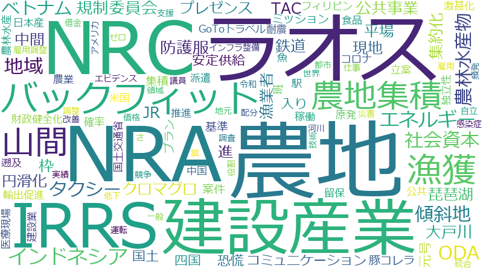

岩井茂樹

兼内閣府副大臣
兼復興副大臣
令和２年９月１８日～令和３年４月３０日
農地、地域、エネルギー、山間、ラオス、基準、枠、インドネシア、漁獲、現地、NRC、タクシー、ベトナム、中間、建設産業、推進、公共事業、農林水産物、NRA、ODA、コミュニケーション、バックフィット、中国、円滑化、案件、派遣、漁業者、社会資本、農地集積、鉄道、防護服、IRRS、JR、コロナ、プラン、公共、国土、国土交通省、支援、規制委員会、調査、農業、集約化、傾斜地、安定供給、米国、集積、プレゼンス、仕事、入り、四国、技術、稼働、進、食品、駅、GoToトラベル、さ、フィリピン、ミッション、価格、元号、原発、地元、平場、役割、災害、立案、統合、自立、豚コレラ、財政健全化、質、農林水産、配分、魚、TAC、アメリカ、インフラ整備、エビデンス、クロマグロ、ゼロ、一般、世界、令和、低下、借金、医療現場、大戸川、実績、建設業、恐慌、感染症、改善、日本産、河川、激甚化、独立性、班、琵琶湖
農地、ラオス、NRA、NRC、建設産業、IRRS、バックフィット、漁獲、山間、農地集積、インドネシア、地域、エネルギー、農林水産物、社会資本、傾斜地、ODA、タクシー、ベトナム、規制委員会、防護服、公共事業、集約化、大戸川、漁業者、枠、JR、平場、円滑化、TAC、現地、鉄道、琵琶湖、進、中間、クロマグロ、プレゼンス、コミュニケーション、四国、元号、国土、安定供給、入り、恐慌、ミッション、集積、豚コレラ、基準、プラン、案件、財政健全化、GoToトラベル、農業、輸出促進、フィリピン、魚、公共、駅、国土交通省、派遣、日本産、遡及、留保、中国、食品、農林水産、米国、班、稼働、原発、コロナ、推進、耐震、激甚化、立案、確率、独立性、医療現場、建設業、インフラ整備、自立、エビデンス、借金、統合、配分、頻発、河川、雇用調整、領域、運転、価格、仕事、質、調査、支援、都市、技術、地元、競争、災害